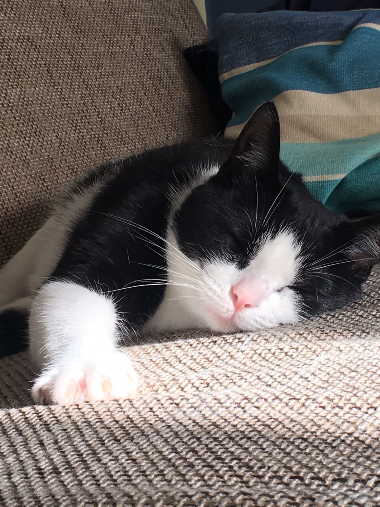

Fotocredit: Monique Dubbeldam featuring Cloe de kat.
Alternatieve tekst voor afbeeldingen
Goede alternatieve tekst
Lege alternatieve tekst
Geen alt attribuut voor de afbeelding (fout in de code)
Een veel te lange alternatieve tekst
Alternatieve tekst links als afbeelding
Zeg waar je naar toe linkt in de alt tekst